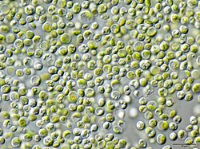

Zelené řasy
V čem jsou speciální?
Zelené řasy obsahují chlorofyl a i b, díky čemuž probíhá fotosyntéza podobně jako u vyšších rostlin. Mají speciální buněčnou stěnu z celulózy a ukládají škrob uvnitř plastidů, což je odlišuje od jiných řas. Zelené řasy se mohou rozmnožovat vegetativně, nepohlavně i pohlavně a některé druhy střídají generace. Některé tvoří jednobuněčné kolonie, jiné mají vláknitou nebo lupenitou stélku, což je další jejich speciální vlastnost. Často rostou ve sladkovodních nádržích, vlhkých půdách i jiných prostředích s dostatkem světla. Produkují kyslík, fixují CO₂ a slouží jako potrava pro mnoho dalších organismů, což zdůrazňuje jejich ekologický význam. Zelené řasy jsou tak speciální svou stavbou, rozmnožováním, ekologickou rolí i schopností rychlého růstu.
Příklad zelené řasy
Chlorella
Chlorella je jednobuněčná zelená řasa s kulovitou nebo mírně elipsoidní buňkou. Velikost buněk se pohybuje kolem 2–10 mikrometrů. Buňka obsahuje chlorofyl a i b, což umožňuje fotosyntézu. Zásobní látkou je škrob, který se ukládá uvnitř plastidů. Buněčná stěna je pevná a tvořená celulózou. Rozmnožuje se dělením buňky, což umožňuje rychlý růst populace. Tento druh zelené řasy je speciální svou rychlostí růstu, jednoduchou stavbou a vysokou výživnou hodnotou.
